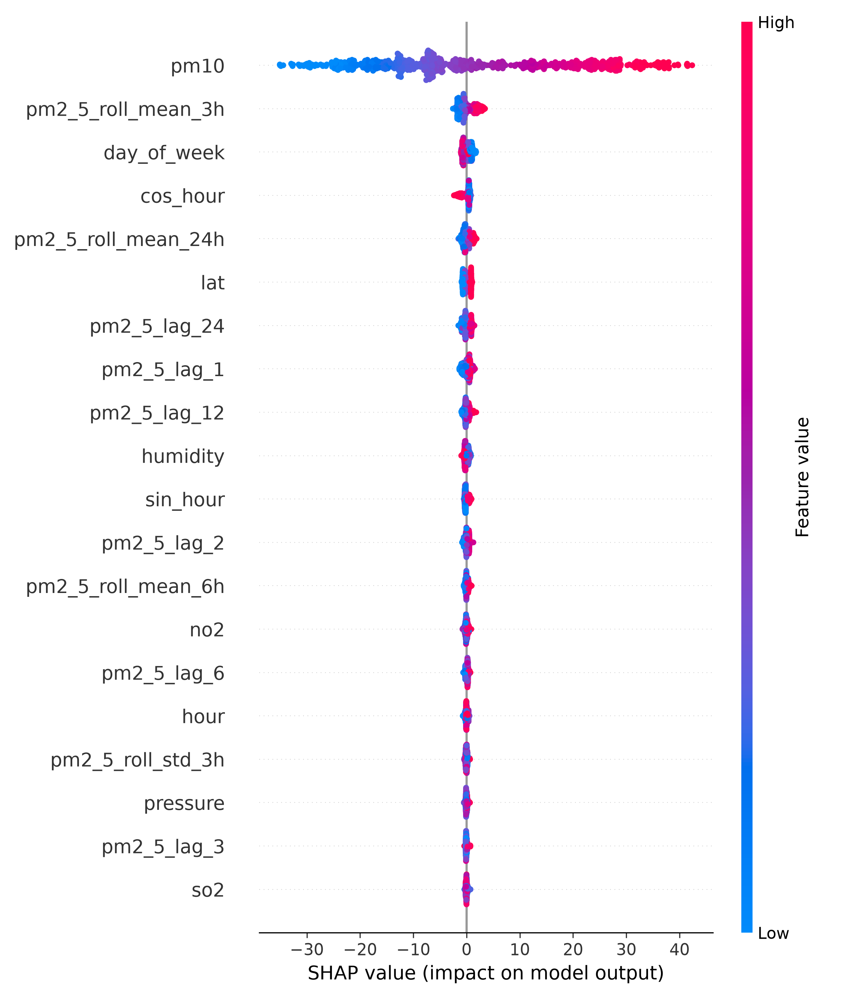

Hyperlocal Air Quality
Forecasting
An end-to-end ML pipeline that predicts next-hour PM2.5 concentrations for Delhi, Mumbai, and Bengaluru. Fuses live OpenWeather sensor data with 24-hour autoregressive features, trains a LightGBM regressor, and serves explainable predictions through a FastAPI backend and Streamlit dashboard.
The Problem
Public air quality dashboards report a single AQI number for an entire metropolitan area. A commuter in Andheri sees the same reading as someone 30km away in Navi Mumbai, even though local pollution levels can differ significantly due to traffic, construction, and wind patterns.
These dashboards also only show current conditions. They do not predict what the air quality will be in the next hour, which is the information people actually need to plan outdoor activities, commutes, or exercise.
This project addresses both gaps: coordinate-level, next-hour PM2.5 predictions backed by real atmospheric data, temporal feature engineering, and model explainability so users and researchers can understand what is driving each forecast.
How It Works
The pipeline runs in five stages, from raw API data to an interactive dashboard.
Data Ingestion
Fetches live PM2.5, PM10, NO2, SO2, CO, temperature, humidity, pressure, wind speed, and wind direction from the OpenWeather Air Pollution and Weather APIs. Covers Delhi, Mumbai, and Bengaluru at hourly resolution.
Data Quality
Applies validation gates: negative pollutant values are set to NaN, humidity is bounded to 0-100%, short sensor gaps (3 hours or less) are forward-filled, and longer gaps remain NaN to avoid silent imputation.
Feature Engineering
Converts circular wind direction to Cartesian vectors (u, v). Encodes hour-of-day as sine/cosine to preserve cyclical continuity. Generates autoregressive lags (t-1 through t-24) and rolling statistics (3h, 6h, 24h windows) for PM2.5.
Model Training
Trains a LightGBM gradient-boosted regressor on the processed features. Uses a chronological 80/20 split with a 24-hour purge gap between train and test sets to prevent data leakage through lag features.
Explainability and Serving
TreeSHAP computes exact Shapley values for each prediction, attributing the forecast to specific input features. The model is served through a FastAPI microservice, with a Streamlit dashboard for interactive forecasting and trend analysis.
Model Results
| Model | MAE (µg/m³) | vs. Baseline |
|---|---|---|
| Tier 1: Persistence Baseline | 47.07 | Baseline |
| Tier 2: 24h Rolling Naive | ~41.0 | ~13% |
| Tier 3: LightGBM (this project) | 35.73 | 24.1% |
Evaluated using Mean Absolute Error on a chronological hold-out set. The 24-hour purge gap between training and test data prevents temporal leakage through autoregressive lag features.

What Drives Each Prediction
- Pollution momentum pm2_5_lag_1 and short-window rolling means are the strongest predictors. Recent pollution levels are the best indicator of near-future concentrations.
- Diurnal patterns Sine and cosine hour encodings capture rush-hour peaks and overnight lows. The model learns that PM2.5 rises during morning and evening traffic windows.
- Wind dispersion The u_wind and v_wind Cartesian components contribute measurably. Higher wind speeds correlate with lower PM2.5 due to atmospheric dispersion.
- Cross-pollutant signals NO2 and CO readings provide supplementary information about combustion-related pollution sources near the measurement point.
System Architecture
The trained model runs behind a FastAPI server. The Streamlit dashboard connects to it for live forecasting, geospatial mapping, and trend analysis. The API also supports WAQI ground-station fusion, calibrating OpenWeather satellite estimates against nearby monitoring stations when available.
Machine Learning
- LightGBM
- scikit-learn
- SHAP (TreeSHAP)
- statsmodels (STL decomposition)
Infrastructure
- FastAPI + Uvicorn
- Streamlit
- MLflow (SQLite backend)
- pytest
Data Sources
- OpenWeather Air Pollution API
- OpenWeather Weather API
- WAQI ground-station API
- GeoPandas + Folium (mapping)
Documentation
Project documentation covering the model specification, data schema, risk analysis, and product requirements.
Model Card
Architecture, parameters, evaluation, limitations, and fairness considerations.
Data Dictionary
Complete schema for raw and processed datasets, including units and transformations.
Failure Mode Analysis
Sensor dropout handling, data quality gates, and degradation scenarios.
User Stories
Product backlog with personas, acceptance criteria, and misuse cases.